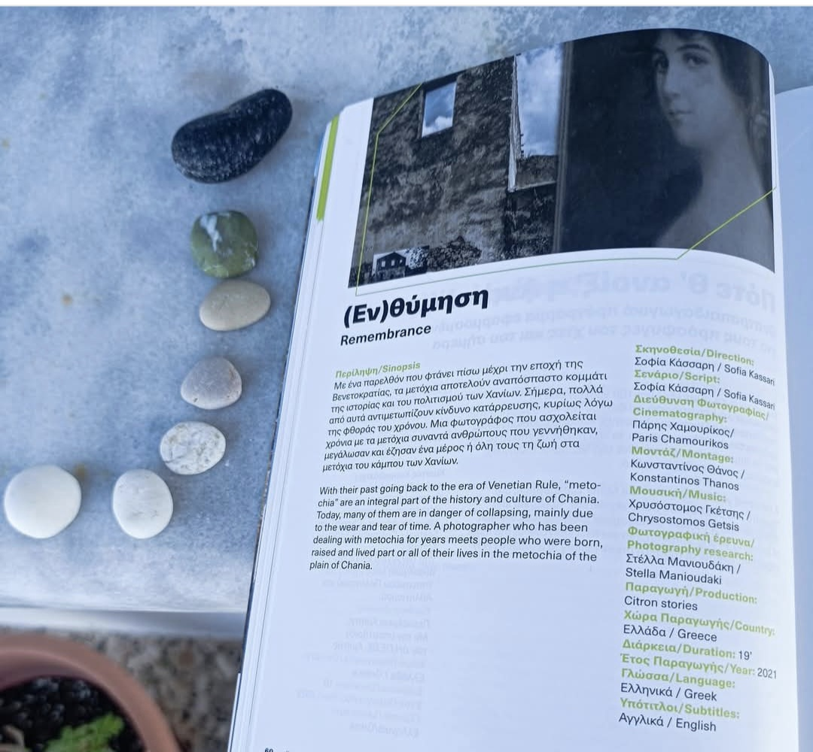

Participation in a new exhibition
I am pleased to announce my participation in a new group exhibition of PHOTOgalleries by PHOTOVISION ART. The exhibition will be at Zappeion Megaron from 11 to 13 October.
I am pleased to announce my participation in a new group exhibition of PHOTOgalleries by PHOTOVISION ART. The exhibition will be at Zappeion Megaron from 11 to 13 October.
You can now watch in Youtube the movie "Ενθύμηση" directed by Sofia Kasssari and produced by Citron stories, at Chania Film Festival, inspired by my photographic travelogue in the Metohia of Chania...
I am announcing my new website which is published today, August 24, 2024.

Screening of the movie "Ενθύμηση" directed by Sofia Kasssari and produced by Citron stories, at Chania Film Festival, inspired by my photographic travelogue in the Metohia of Chania...
